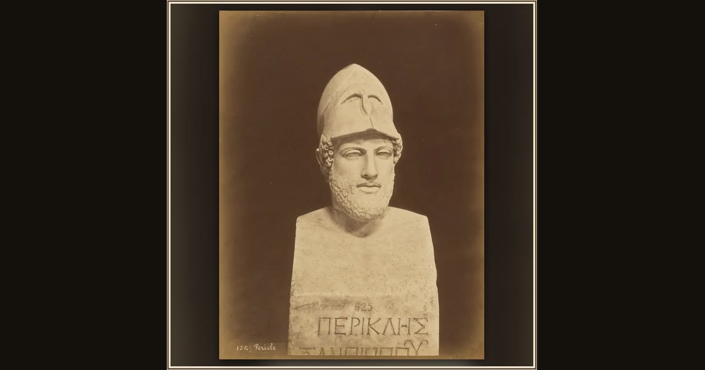

Herme van Pericles in de Vaticaanse Musea, Italië
anonymous, Vaticaanstad (photographer), after sculpture by anonymous · 1851 - 1900 · rijksmuseum
A nineteenth-century photograph of the helmeted herm inscribed with Pericles' name in the Vatican Museums; the Athenians here vote as Pericles advised and refuse Sparta's demands (1.145.1). Explore its place in Thucydides's History of the Peloponnesian War, Bo